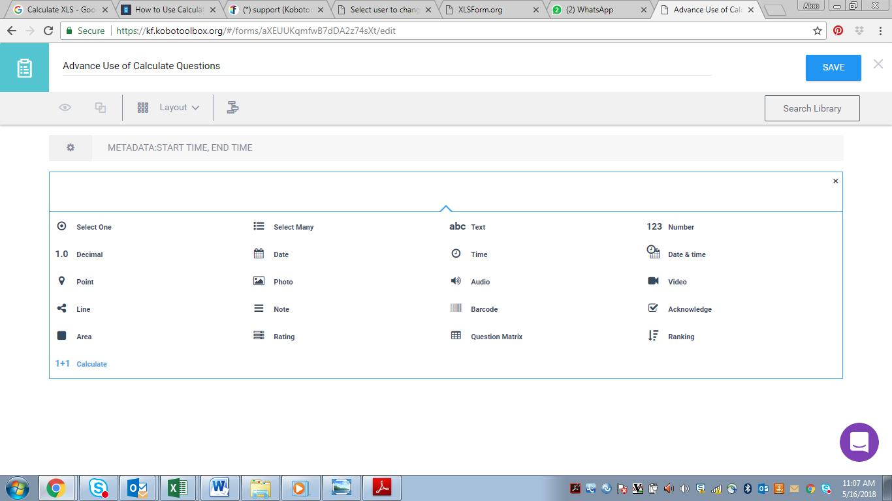
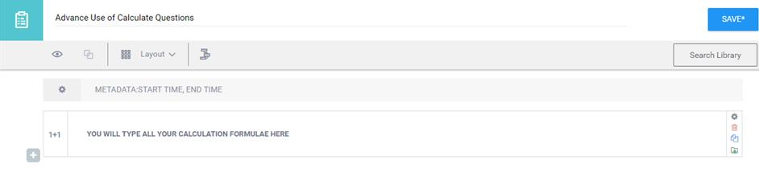
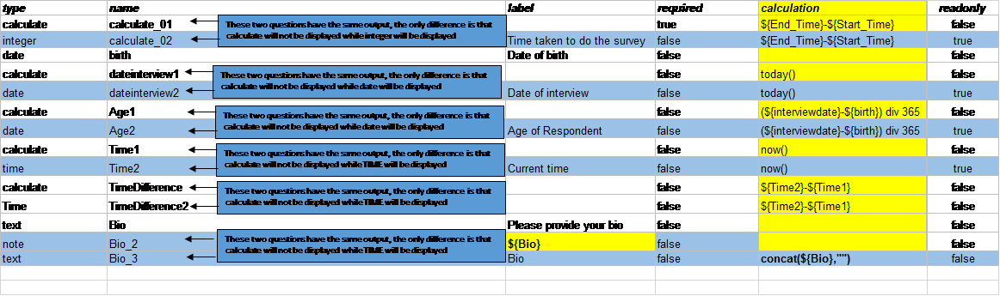
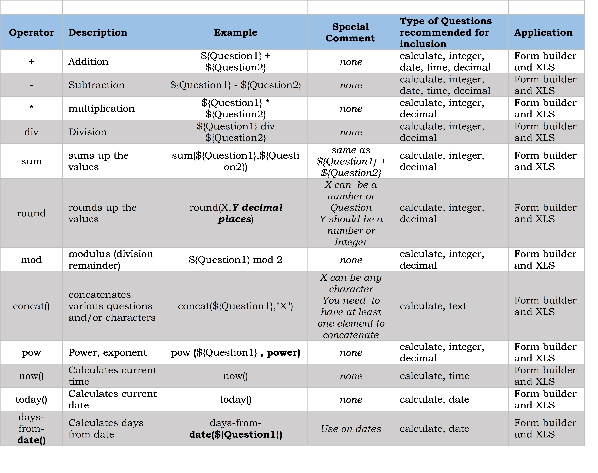
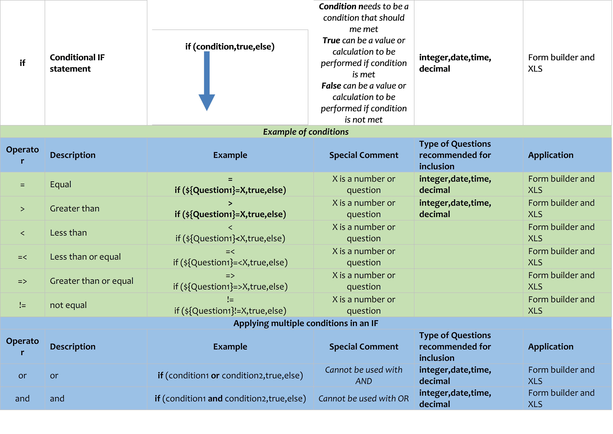

Search the knowledge base, browse our resources, and visit our Community Forum for more detailed information
Certains formulaires avancés peuvent nécessiter qu’un calcul interne soit effectué dans le formulaire (plutôt qu’après, lors de l’analyse). Pour ce faire, il suffit d’ajouter une question de type Calcul et de saisir l’expression mathématique dans le champ du libellé de la question.
Cet article fournit des instructions étape par étape pour ajouter des calculs dans l’interface de création de formulaires KoboToolbox (KoboToolbox Formbuilder) ou en téléchargeant le formulaire et en l’ajoutant directement dans le XLSForm.
Pour consulter la liste complète et détaillée de toutes les fonctions disponibles, visitez l’excellente documentation XPath Functions d’ODK.
Étape 1 : Ajoutez une question de type Calcul.

Étape 2 : Saisissez votre formule de calcul à l’endroit où vous rédigeriez normalement votre question.

Note :
Votre question de calcul ne sera pas affichée lors de la saisie ou de la collecte de données, que ce soit dans KoboCollect ou dans Enketo. Elle sera toutefois visible lors de la consultation des données en mode Tableau ou dans la version téléchargée.
Vous devez respecter les mêmes règles que pour les XLSForms (voir la section sur les règles ci-dessous).
Nous recommandons cette approche pour travailler avec des fonctions de calcul plus avancées.
Les XLSForms permettent d’utiliser la fonction de calcul sur différents types de questions.
Vous pouvez reproduire l’approche utilisée dans le Formbuilder, où la question ne sera pas affichée lors de la collecte de données, en définissant simplement le type de question comme calculate et en saisissant votre calcul dans la colonne calculate.
Vous pouvez utiliser calculate avec différents types de questions ; dans ce cas, la question sera affichée lors de la collecte de données. Vous pouvez choisir de rendre cette question en lecture seule afin qu’aucune modification ne puisse être apportée à la saisie. Les types de questions que nous avons testés avec cette approche sont les suivants :
a. integer (accepte uniquement les fonctions de calcul numériques)
b. text (accepte uniquement les fonctions de calcul de type chaîne de caractères)
c. note (accepte uniquement le référencement de questions, et non les fonctions de calcul)
d. date (accepte uniquement les fonctions de calcul de type date)
e. time (accepte uniquement les fonctions de calcul de type heure)

Vous ne pouvez pas combiner des calculs numériques et des calculs de type chaîne de caractères dans la même question.
Vos calculs numériques suivent la règle PEMDAS (Parenthèses, Exposants, Multiplications, Divisions, Additions, Soustractions), c’est-à-dire que l’ordre d’exécution des opérations est le suivant : parenthèses, divisions, multiplications, additions, puis soustractions. Tenez-en toujours compte lors de l’organisation de vos questions.
Les questions de calcul qui font référence à d’autres questions ne doivent pas être placées dans le même groupe que les questions référencées, car le calcul n’apparaîtra pas tant que vous ne quitterez pas le groupe.
Lorsque vous référencez une question dans un calcul, vous devez l’indiquer sous la forme ${Question}, où Question correspond au nom de la question.
Vous pouvez « forcer » l’évaluation d’un calcul en définissant required comme TRUE.
(N’hésitez pas à nous en suggérer d’autres et nous mettrons la liste à jour.)


Recommandé pour les utilisateurs avancés
Supposons que vous ayez une question telle que QN1 Avez-vous une question ? avec les réponses Oui=1 Non=2 Ne sait pas=999.
Dans ce cas, vous pouvez créer une question fictive QN1 juste après QN1 pour tenir compte des différences de codage et définir l’équivalent mathématique. Vous créerez donc une question de calcul QN1d (remarque : il s’agit de ma propre convention de nommage ; d signifie fictif / dummy) et définirez la valeur par défaut à 0, tout en rédigeant la formule suivante : If(${QN1}=1,1,0).
Notez que dans mon formulaire de test, j’ai réussi à créer cette situation : les données apparaissent telles que codées pour QN1, et telles que calculées pour leur signification mathématique pour QN1d. C’est cette signification qui doit correspondre à ce que votre score est censé représenter. Vous pouvez procéder ainsi pour des calculs tels que l’indice de richesse, où Oui et Non peuvent avoir des valeurs différentes selon les pays.
Une fois cette opération effectuée pour toutes vos questions, vous pouvez ajouter une question de calcul qui additionne toutes les questions fictives de la manière suivante :
${QN1d}+${QN2d}+ etc.
Did you find what you were looking for? Was the information clear? Was anything missing?
Share your feedback to help us improve this article!
KoboToolbox is maintained by Kobo Inc.